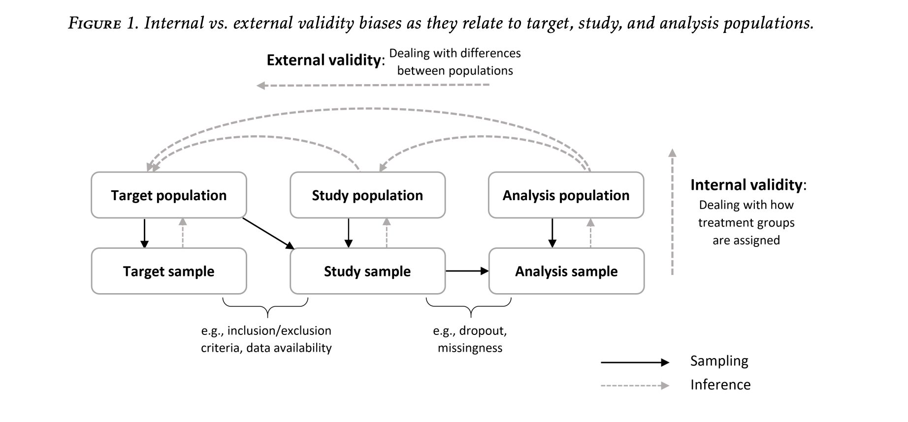
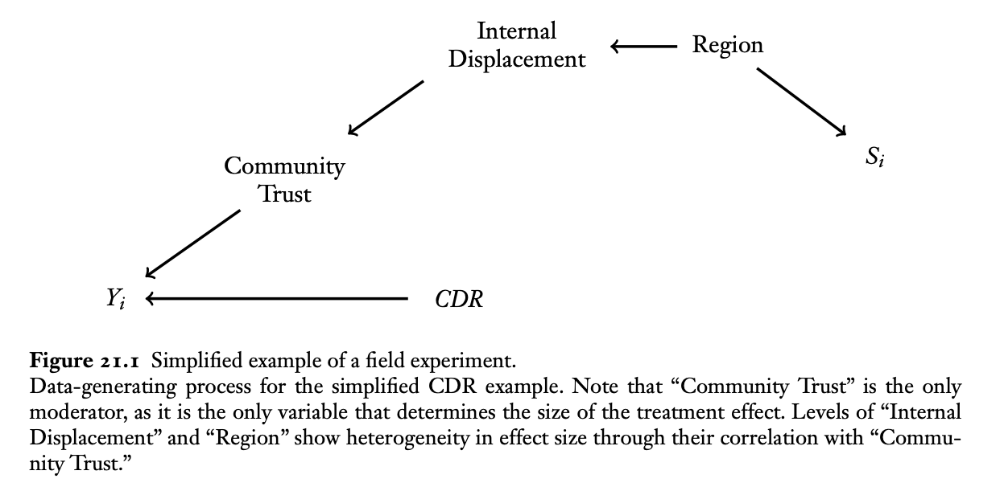

Introduction
What can you do when the sample you’ve collected doesn’t represent the population you’re interested in studying? When such a disconnect between sample and population of interest goes unaddressed by the researcher, we say that the study suffers from sampling bias. Ideally, researchers would collect a random sample from their population of interest, in which case, sampling bias is expected to vanish. The issue is that random sampling is hard. Collecting a sample from the units available to you, not necessarily representative of the population you care about, is much easier. There’s a reason why the subjects in psychology studies are often college students, and it’s not that the behavior of college students is of unique interest to psychologists.
If you’re asking the question posed at the top, you’re already on the right track. You’ve recognized that the subjects in your study might not represent your population of interest and you want to somehow address this disconnect. Is this possible? This is sometimes known as the problem of generalization, and it’s a problem I would like to explore in a series of blog posts. Specifically, I would like to engage with this question in the context of causal inference, where we are specifically interested in inferring cause-effect relationships and not just associations. It turns out that sampling bias poses a threat to causal inference just as much as it threatens any other statistical inference, and so people who study causal inference have given some attention to this question in the past 15 years.
In the 2008 paper “Misunderstandings between experimentalists and observationalists about causal inference,” Kosuke Imai et al. decompose the error in estimating a causal effect in some population of interest into two additive components. The first, which is termed sample selection, is the difference between the true effect in the sample that’s been collected and the true effect in the target population. The second, which is termed treatment imbalance, is the difference between your estimate and the true effect in the sample. Whereas treatment imbalance poses a threats to internal validity (how well are you estimating the effect in the sample you’ve collected), sample selection poses a threat to external validity (how well does the true causal effect in the sample approximate the true causal effect in the population). Here is a really nice diagram from a review paper by Irina Degtiar and Sherri Rose on the topic.

There is a tension in study design between achieving internal validity and achieving external validity. To arrive at internally valid conclusions, you answer the question: how do observed differences in Y across levels of X in my sample relate to the causal effect of X on Y in my sample? One condition that is sufficient for ensuring that the former consistently estimates the latter is that the values of X have been randomly assigned to the units. Intuitively, if X is randomly assigned, then the units assigned one value of X are “comparable” or “exchangeable” with units who received a different level of X. If these units still exhibit differences in their Y’s, this can then only be due to X affecting Y in some way. This fact explains the position that the randomized experiment occupies in the eyes of many as a gold standard study design. The issue with randomized experiments, of course, especially when the units in concern are humans, is that they’re a lot of work! It’s a lot of work for the researcher to recruit subjects and deliver the treatments, and it is often a lot of work for the subjects themselves to participate. For this reason, not everyone participates in experiments, and those who do are usually of a particular breed. Remind you of something? Sampling bias!
So randomized experiments are the gold standard for internal validity but often come at the cost of poor external validity. Estimates obtained from observational studies of large cohorts, on the other hand, are more likely to be externally valid, but require adjustment to guarantee internal validity. No free lunch in science, as they say. And yet, there is a silver lining! The silver lining is that when it comes to the actual analysis of the data you’ve collected, there are statistical methods that allow you to adjust your estimates to obtain internally valid results from observational data, provided certain assumptions are met. These types of methods and assumptions have been developed and refined by the researchers in the field of causal inference over the past 30, 40 years. It turns out that the framework, assumptions, and methods that have been developed for advancing internal validity in observational studies have direct analogs to the framework, assumptions, and methods required to adjust experimental data for external validity. In the past fifteen years, there have been a decent number of methodological and applied papers applying these methods to experimental data to adjust for external validity. I’m interested in how well these methods perform in practice.
Formal Framework for External Validity
A design-based framework is often adopted in research on internal validity. In this framework, we have a finite population of units with fixed covariates and potential outcomes, and the sole source of randomness for evaluating estimators of the causal estimands in this finite population is the treatment assignment. In the context of more classical statistical inference, the idea of a target population is replaced with an abstract probability distribution and sample units viewed as i.i.d. realizations from this distribution. In this set-up, we have a random, representative sample from the target population, and the problem of sampling bias goes away.
Neither of these set-ups allow for a discussion of external validity. In order to talk about sample bias, we need some notion of multiple populations or at least some idea of there being a target population and an experimental sample that are not coextensive. The finite-population framework from the internal validity literature gives us our experimental sample. For the target population, there are two possibilities: it can either be a superset of the experimental sample or disjoint from it. The conceptual problem of adjusting for external validity remains the same in both scenarios, although the formulas for the estimators will differ. Following Kern et al. (2018), we will consider the target population disjoint from the experimental sample, and we assume that we can find a representative sample of this target population. In other words, we have access to two distinct data sets, one of which is our experimental sample and the other, a representative sample of the target population. Let \(\Omega_s\) be the collection of indices of the units in our experimental sample, \(\Omega_t\) the units of the representative sample from the target population, and
\[ \Omega_s\cap\Omega_t = \emptyset, \quad |\Omega_s|=n, \quad |\Omega_t| = M \]
We will focus on a binary exposure \(D\in\{0,1\}\), which will be under experimental control for the units in \(\Omega_s\) but out of the researchers’ control in \(\Omega_t\). Let \(S\) be an indicator for belonging to the experimental sample \(\Omega_s\). Finally, let \(\bf{X}\) be a set of pre-treatment covariates. and let \(Y\) be the response of interest. We define the target population average treatment effect (PATE) as \[ PATE = \mathbb{E}_{\Omega_t}[Y(1) - Y(0)] = \mathbb{E}_{\Omega_s\cup\Omega_t}[Y(1) - Y(0) \mid S =0], \]
where \(Y(d)\) denotes potential outcomes of the response under exposure \(D=d\). From now on, for simplicity, assume that all expectations are taken in \(\Omega_s\cup\Omega_t\), so that the subscript will be dropped to write \(PATE = \mathbb{E}[Y(1) - Y(0) \mid S =0].\)
Example
I will follow the example provided by Erin Hartman in her contribution to the compilation Advances in Experimental Political Science in a chapter called “Generalizing Experimental Results.” The example is based on the findings of Fearon et al. (2009), in which the authors study the impact of community-driven reconstruction (CDR) programs in a country that has just undergone a civil war. The authors conduct an experiment in Liberia to study the effect of such programs. The units for this experiment are villages, and the authors limit their interventions to villages in northern Liberia, which was the center of conflict during the civil wars against Charles Taylor. One might be interested in knowing whether the results from this experiment generalize to villages across the country. Knowing that the villages selected for the experiment are not a random sample from the country but rather are all taken from the north, there is nothing a priori to rule out the possibility of sample selection: countries are not homogeneous, after all.
Following Hartman, I will use simulations, rather than real data to model this scenario. I hope that simulations will be able to shed some light on the feasibility of adjusting for sampling selection for the purpose of obtaining externally valid estimates.
Before concluding this post, here is a figure from the chapter by Hartman

In the next post, we will discuss the assumptions that are needed in order to have some hope of learning about the PATE from the field experiment and discuss this figure in more detail.
References
Kosuke Imai, Gary King, and Elizabeth Stuart. 2008. “Misunderstandings Among Experimentalists and Observationalists about Causal Inference.” Journal of the Royal Statistical Society, Series A, 171, part 2, Pp. 481–502.
Irina Degtiar, Sherri Rose. 2021. “A Review of Generalizability and Transportability.”arXiv:2102.11904
Erin Hartman (2021). Generalizing Experimental Results. In Advances in Experimental Political Science.